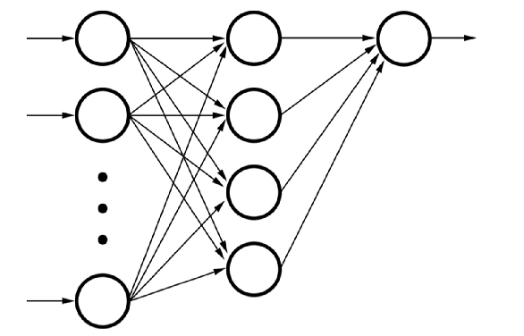

Number Classifier
Objective
Develop a Feedforward Neural Network from scratch that identifies handwritten numbers in real-time.

Keywords
- Feedforward Neural Network
- Computer Vision
Results
Number Classifier can be run on an app (IP Camera) within a phone/computer where it identifies handwritten numbers. Number Classifier is a feedforward neural network application that is written from scratch and has a testing error of 10%. The training dataset is the MNIST handwritten digit database that has 60,000 handwritten single digits. Number Classifier utilizes OpenCV for preposssing the real-time images to be filtered and processed through the neural network. Examples of the application in action is seen below.